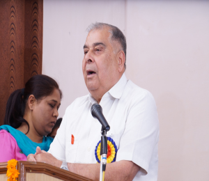

| Home | About Us | NCTE | Infrastructure | Careers | Faculty | Sports | Contact Us |
| Chairman 's Message | ||||
|  |
Education plays a key role in the modernization and development of the country. It is fundamental to Nation’s all round growth and development: material as well as spiritual. It refines our sensitivities and perceptions that contribute to national cohesion, scientific temper of mind and interdependence of spirit, thus furthering the goals of socialism, secularism and democracy as enshrined in our constitution. It also develops human potentialities at different levels of economy. No
educational programme can be a success without the proper
education of teachers. A sound programme of professional
education of teachers is essential for the qualitative
improvement of education. In order to achieve this very noble
goal, the colleges of education were specifically pioneered to
be established. Professional training of teachers is key to
quality enhancement of school education. The skills and
competencies of teachers can be developed through systematic
approach to revitalize and modernize teacher education
programme.
Sh. P.K. Johar |
|||
2024 © Sai College .All Rights Reserved